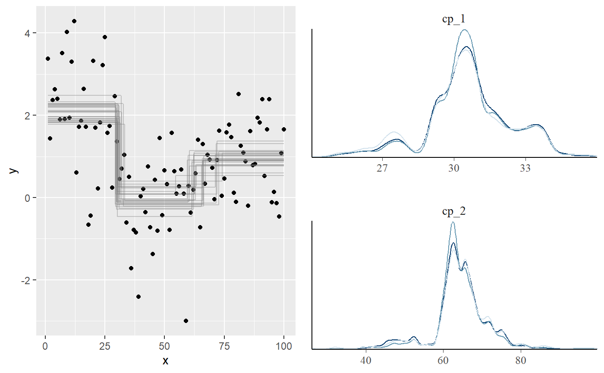

mcp and other change point packages
Jonas Kristoffer Lindeløv
2019-11-13
packages.RmdThere are a lot of change point packages out there already, so why mcp? Here are my (probably biased) thoughts about this. I compiled some tables, summarising change point packages (.xlsx file here). I will demonstrate each of these packages in an applied example below to discuss their merits and shortcomings.


Unique features of mcp
- Manually specify the segment structure. Other packages allow for specifying segment structure, but it has to be shared for all segments. Read more about the formula syntax in
mcp. - Posterior distribution for each change point. This matters since they rarely conform to known distributions.
-
varying change points: To my knowledge, no other package implements varying change points, i.e., allowing by-group differences in change points while sharing all other parameters. Read more about varying change points in
mcp. - Sharing and fixing parameters to values and other parameters as discussed under priors in mcp.
-
Explicit priors:
bcpis the only other Bayesian change point package I know of. It contains a few high-level prior parameters, but not for specific parameters such as where change points are expected to occur etc. Read more about priors in mcp for more. -
Prior and posterior predictive checks. In general, most other packages have limited or no model checking functionality. The default
plot.mcpfitis inherently a visual predictive check and can be applied to priors (mcp(..., sample = "prior")and posteriors. Of course inspecting Gelman-Rubin statistics and effective sample sizes insummary.mcpfit, as well as trace plots (plot(fit, "trace")), also go a long way. - Flexible hypothesis testing using
looandhypothesis, including testing the existence of a change point. Most other packages stop at estimation, though some provide p-values. Read more about hypothesis testing and model comparison usingmcp.
Where mcp is inferior
mcp is inferior with respect to:
-
speed: mcmc sampling is slow compared to analytical and specialized solutions. For datasets > 20.000 points, it may take hours to fit
mcp. Running in parallel and lowering the iterations helps (mcp(..., cores = 4, iter = 1000, adapt = 300, update = 300), but remember to check convergences. -
automatic detection of change points: most packages out there does automatic change point detection. This is not a space that
mcptries to fill so use the other packages here. Though given the intercept-only example below, I would worry about many package’s ability to recover change points. - no support for autoregressive models: As change point models are big in time-series analyses, I’d much like to implement at least AR(1). This is on planned, but not implemented yet in version 0.1.
- not multivariate and no variance change point: These are planned but not implemented yet in version 0.1.
A simple dataset to compare packages
As a simple example, we simulate some intercept-only data with change points at 30 (from mean=2 to mean=0) and 70 (to mean=1) and a residual of 1 SD.
# Simulate
set.seed(42) # I always use 42; no fiddling
data = data.frame(
x = 1:100,
y = c(rnorm(30, 2), rnorm(40, 0), rnorm(30, 1))
)
# Plot it
plot(data)
abline(v = c(30, 70), col="red")
mcp
mcp needs no further introduction. We fit the three-plateaus model with default priors:.
library(mcp)
segments = list(y~1, 1~1, 1~1) # three intercept-only segments
fit_mcp = mcp(segments, data, par_x = "x")
summary(fit_mcp)## Family: gaussian(link = 'identity')
## Iterations: 9000 from 3 chains.
## Segments:
## 1: y ~ 1
## 2: y ~ 1 ~ 1
## 3: y ~ 1 ~ 1
##
## Population-level parameters:
## name mean lower upper rhat eff ts_se
## cp_1 30.6048 27.086 33.998 1.00 1450 18.2049
## cp_2 64.3864 46.709 77.177 1.01 835 524.9259
## int_1 2.0478 1.654 2.436 1.00 4307 0.0911
## int_2 -0.0584 -0.500 0.372 1.01 1837 0.2310
## int_3 0.9210 0.503 1.312 1.00 2403 0.1524
## sigma 1.0623 0.914 1.226 1.00 3772 0.0131The summary shows good parameter recovery, though the second change point is detected a bit early. This is understandable if you look at the data, and the true change point is still within the highest density interval.
Plotting the posterior distributions of the change points reveal that they are not well represented by a Gaussian or other known distributions. Therefore, confidence intervals are likely to be meaningless for this problem.
gridExtra::grid.arrange(plot(fit_mcp),
plot(fit_mcp, "dens_overlay", pars = c("cp_1", "cp_2")),
ncol = 2)
mcp takes around 10 seconds to fit this example, which is the slowest of all the packages considered here. You can bring that down to 4 seconds by running in parallel, using mcp(..., cores = 3).
EnvCpt
EnvCpt can detect change points in mean and variance (not separately), slopes (“trends”), and AR(1)/AR(2), as well as conveniently fitting various models without change points. It automatically infers the number of change points. Unless otherwise instructed (through models argument), EnvCpt fits all models to the data, allowing you to pick one. It allows
## Fitting 12 models##
|
| | 0%
|
|===== | 8%
|
|=========== | 17%
|
|================ | 25%
|
|====================== | 33%
|
|=========================== | 42%
|
|================================ | 50%
|
|====================================== | 58%
|
|=========================================== | 67%
|
|================================================= | 75%
|
|====================================================== | 83%
|
|============================================================ | 92%
|
|=================================================================| 100%## Length Class Mode
## summary 24 -none- numeric
## mean 5 fitdistr list
## meancpt 1 cpt S4
## meanar1 14 Arima list
## meanar2 14 Arima list
## meanar1cpt 1 cpt.reg S4
## meanar2cpt 1 cpt.reg S4
## trend 12 lm list
## trendcpt 1 cpt.reg S4
## trendar1 12 lm list
## trendar2 12 lm list
## trendar1cpt 1 cpt.reg S4
## trendar2cpt 1 cpt.reg S4This can be used to maximize the log-likelihood. Of interest here is meancpt. The documentation says that it calls changepoint::cpt.meanvar, modeling a simultanous change in mean and variance. Curiously, changepoint::cpt.meanvar(data$y) only finds one change point when called directly (see below), but the output matches changepoint.np::cpt.np(data$y)@cpts, so I suspect that this function is used instead. EnvCpt has a nice plot of all the models:

Digging into the meancpt, we get maximum-likelihood estimates of the change points and the parameters of each segment.
## [1] 30 65 100## $mean
## [1] 2.06858683 -0.07385687 0.96511049
##
## $variance
## [1] 1.5225923 1.0064793 0.6442151I think the change point at x = 100 should just be ignored. We see that it approximately identifies the change points, though without intervals.
segmented
segmented has a very shallow learning curve combined with great modeling flexibility. You simply specify your model in lm, glm, Arima, and also work for e.g. coxph (Cox proportional Hazard). Supply it to segmented which then segment your data along the x-axis and applie the linear model in each segment. The trick is identifying the locations where this split works the best. The positive consequence is that you get great modeling flexibility with GLM, AR(1) models, etc.
The downside is that you kan only have one kind of segments and (for some reason) it ignores the intercepts on anything but the first segment. Only (joined) slopes are supported in segment 2+. Unfortunately, this means that segmented fails for the present changing-intercept data. segmented is otherwise well developed with prediction functions, (frequentist) intervals, plots, etc. so if you have large datasets with impermissible long run times in mcp and it matches what segmented can model, it is a good option.
Enough talk:
library(segmented)
fit_lm = glm(y ~ 1 + x, data, family = gaussian()) # intercept-only model
fit_segmented = segmented(fit_lm, seg.Z = ~x, npsi = 2) # Two change points along x
summary(fit_segmented)##
## ***Regression Model with Segmented Relationship(s)***
##
## Call:
## segmented.glm(obj = fit_lm, seg.Z = ~x, npsi = 2)
##
## Estimated Break-Point(s):
## Est. St.Err
## psi1.x 40.475 3.675
## psi2.x 91.000 4.942
##
## Meaningful coefficients of the linear terms:
## Estimate Std. Error t value Pr(>|t|)
## (Intercept) 3.27753 0.33873 9.676 8.98e-16 ***
## x -0.08849 0.01440 -6.146 1.91e-08 ***
## U1.x 0.12136 0.01770 6.855 NA
## U2.x -0.13915 0.11618 -1.198 NA
## ---
## Signif. codes: 0 '***' 0.001 '**' 0.01 '*' 0.05 '.' 0.1 ' ' 1
## (Dispersion parameter for gaussian family taken to be 1.104904)
##
## Null deviance: 177.66 on 99 degrees of freedom
## Residual deviance: 103.86 on 94 degrees of freedom
## AIC: 301.58
##
## Convergence attained in 9 iter. (rel. change 2.9106e-06)As expected, the change points are off (psi1.x and psi2.x). The default plot is sparse, but you can quickly add more info:

Because the fitted objects returned by segmented contains aic, deviance, etc. it is in principle possible to do model comparison. Here is a BIC-based Bayes Factor testing whether there is one or two change points in the data:
fit_segmented_1 = segmented(fit_lm, seg.Z = ~x, npsi = 1)
BF = exp((BIC(fit_segmented) - BIC(fit_segmented_1))/2) # From Wagenmakers (2007)
BF## [1] 21.89641We can do the same using mcp:
## Compiling model graph
## Resolving undeclared variables
## Allocating nodes
## Graph information:
## Observed stochastic nodes: 100
## Unobserved stochastic nodes: 4
## Total graph size: 922
##
## Initializing model
##
## user system elapsed
## 5.75 0.12 5.92## Warning: Some Pareto k diagnostic values are too high. See help('pareto-k-diagnostic') for details.## Warning: Some Pareto k diagnostic values are too high. See help('pareto-k-diagnostic') for details.## elpd_diff se_diff
## model1 0.0 0.0
## model2 -5.0 2.7While segmented prefers the one-change-point model, mcp prefers the (true) two-change-point model.
cpm
cpm is an intercept-only (in mean and variance) package, so it cannot model slopes. It can detect single change points via detectChangePoint and multiple change points via processStream. processStream is an automatic change point detection, using a p-value threshold to determine if a candidate should be marked as a hit. Multiple ways of computing p-values (cpmType) are available. In my limited testing, they return similar change points, though not identical.
library(cpm)
#fit_cpm = detectChangePoint(data$y, cpmType = "Student") # a single change point
#fit_cpm = processStream(data$y, cpmType = "Mann-Whitney") # Detects three
fit_cpm = processStream(data$y, cpmType = "Student") # Multiple change points
fit_cpm$changePoints## [1] 30 62It detects two change points, which is good. No intervals are returned and no plot functions are provided. The second change point is estimated a bit further away from the true value than mcp.
changepoint and changepoint.np
changepoint is focused on intercept-only changes. It can estimate changes in means (cpt.mean), variance (cpt.var), or both (cpt.meanvar). It is semi-automatic in that you can set the numer of change points using parameter Q and this defaults to five. It can recover ML estimates of the intercepts. It does not estiamte uncertainty, nor model checking. It only takes a response variable, so the change point is the data index, not the point on an x-axis. Make sure that your data is ordered. In our case it is ordered and we have 1 data point at each x, so it is optimal for changepoint.
It detects the first change point, but not the second.
library(changepoint)
fit_changepoint = cpt.mean(data$y)
# Return estimates
c(ints = param.est(fit_changepoint)$mean,
cp = cpts(fit_changepoint))## ints1 ints2 cp
## 2.0685868 0.4456268 30.0000000Plot:

The package changepoint.np extends changepoint by providing a non-parametric version. It is unclear which of the changepoint functions are extended, but it manages to find both change points to a good precision. As with many other packages, no intervals are provided. As mentioned earlier, I suspect that EnvCpt uses this function under the hood.
## [1] 29 65 100bcp
bcp is the only other Bayesian package in the game. It automatically detects change points and segment types, though you can use the parameter d to increase the prior probability of intercept-only models. It provides estimates of means and probability of change point at each x-coordinate. It has little additional functionality. The summary method conveys the same as the plot, so let’s stick to the plot.
We see that it vaguely captures the change point at x = 30, and has some smeared-out probability around x = 60 (mcp detected a single change point at x = 64 here). bcp has some “false alarms” at x < 20.

ecp
ecp contains six functions to detect change points. It is clearly built for multivariate cases, but is I have not managed to get e.agglo working for the present example, but here I run the other five. The resulting information is quite limited with no intervals, no plots, etc. It detects the first change point at x = 30, but not the second change point at x = 70.
data_ecp = as.matrix(data$y)
fit_ecp1 = ecp::e.cp3o(data_ecp, K = 2) # maximum 2 change points
fit_ecp2 = ecp::e.cp3o_delta(data_ecp, K = 2) # maximum 2 change points
fit_ecp3 = ecp::e.divisive(data_ecp, k = 2) # 2 change points. Ignored???
fit_ecp4 = ecp::ks.cp3o(data_ecp, K = 2) # maximum 2 change points
fit_ecp5 = ecp::ks.cp3o_delta(data_ecp, K = 2) # maximum 2 change points
# Show the change point estimates
str(list(
e.cp3o = fit_ecp1$estimates,
e.cp3o_delta = fit_ecp2$estimates,
e.divisive = fit_ecp3$estimates,
ks.cp30 = fit_ecp4$estimates,
ks.cp3o_delta = fit_ecp5$estimates
))## List of 5
## $ e.cp3o : int 31
## $ e.cp3o_delta : int 60
## $ e.divisive : num [1:4] 1 31 63 101
## $ ks.cp30 : int 31
## $ ks.cp3o_delta: int 31strucchange::Fstats
Contains the function Fstats which can detect a single change point. The functionality is limited and way superseeded by changepoint. I won’t go into further details. It finds the change point at x = 30, but not the second change point at x = 70:
## [1] 30TSMCP
Short for “Time-Series Multiple Change Point”. It too is very limited, outputting a single number (!). For the problem at hand, changing method makes no difference. For many other c (c = 0.3, c = 4), it fails to find any change points. There is also TSMCP::cpvnts() to model AR(N), but I have faild to make it find any change points in the present data set.
It finds the change point at x = 30, but not the second change point at x = 70.
## [1] 30robts::changerob
robts is about robust time-series regression. It is not on CRAN, so it has to be installed using install.packages("robts", repos="http://R-Forge.R-project.org"). I fail to install the dependencies, and development of the package seems to have stopped around 2014. It won’t be covered further here.